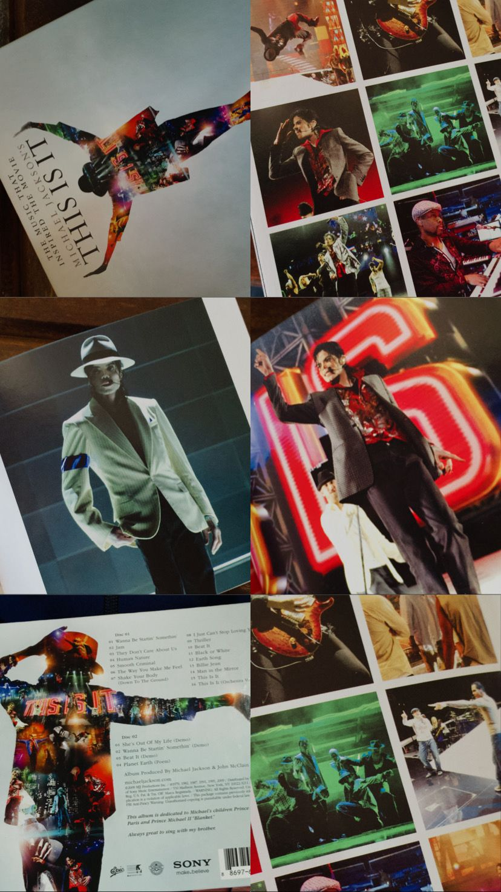

Olá, meu nome é Renan e eu gosto muito do Michael Jackson

Inclusive, comprei um CD da turnê "This Is It", que seria sua última série de shows. Mas, ele veio a falecer em 2009, poucos dias antes da turnê.
Eu gosto muito da música Bad e do álbum Thriller.
 Álbum Bad (1987)
Álbum Bad (1987)
 Álbum Thriller (1982)
Álbum Thriller (1982)